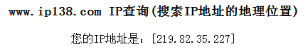

2.3 IP地址绑定错误
问题现象一（单机版）：在OpenMAS业务申办的过程中时,如果OpenMAS服务器预计安装在客户侧机房，客户经理就需要在业务系统中登记绑定客户的公网IP地址，但是经常出现客户提供的公网IP地址参数与实际不符，或者客户不知道自己使用的公网IP是多少。
解决方法： 针对此类情况，建议在客户网络环境中的电脑上（最好是直接在OpenMas服务器 上）登陆网址www.ip138.com，网页中显示的IP地址即为客户的公网IP地址，如下图所示：

问题现象二（多用户版）：多用户版OpenMAS业务申办的过程中时，不能预计该用户安装于哪台OpenMAS服务器，客户经理就需要在多用户版OpenMas信息机安装完成后，根据工程师反馈的服务器IP去重新改绑。
解决方法：针对此类情况，建议在客户网络环境中的电脑上登陆网址www.ip138.com，网页中显示的IP地址即为客户的公网IP地址。